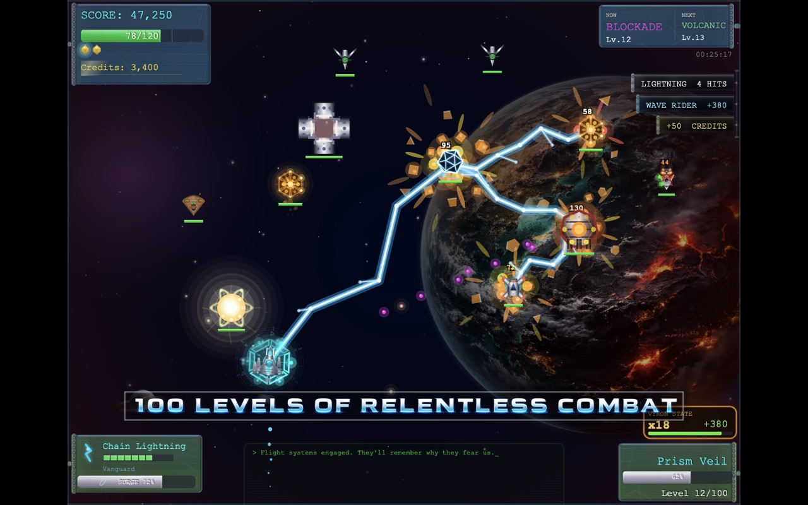
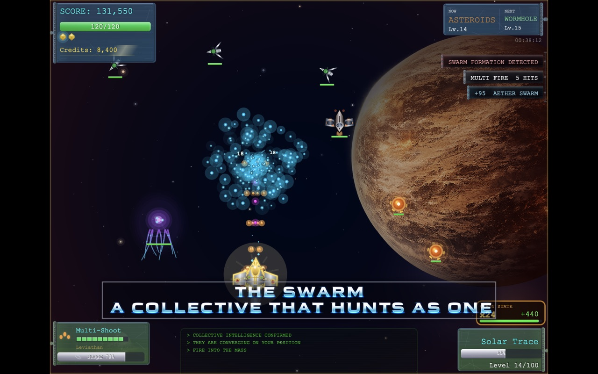
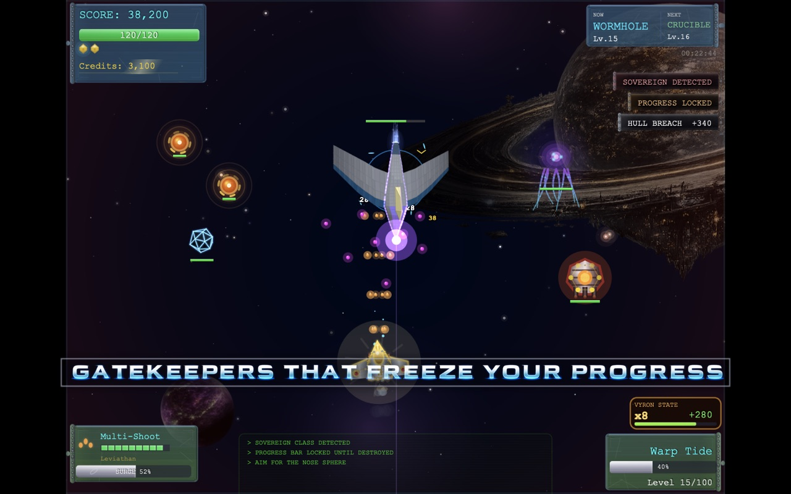
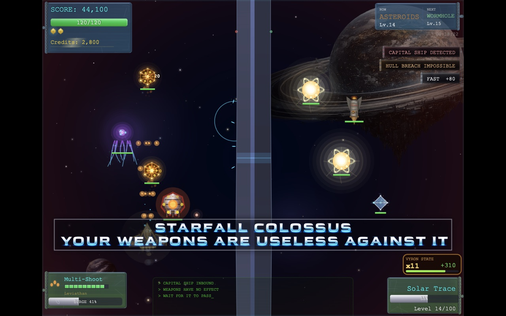
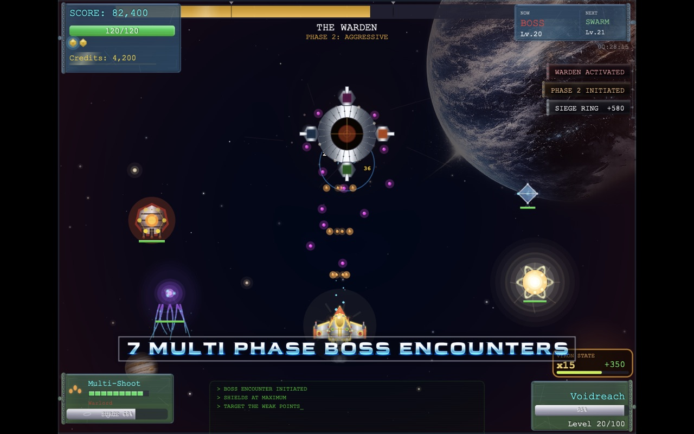
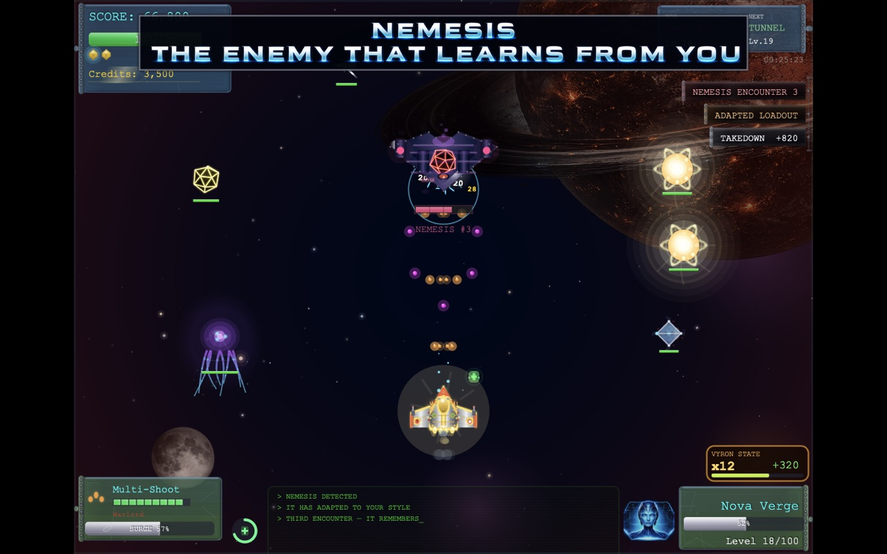
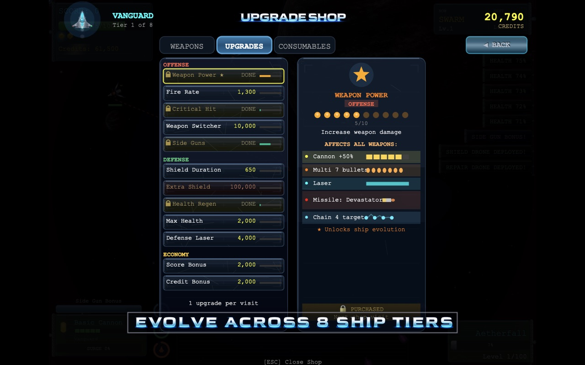
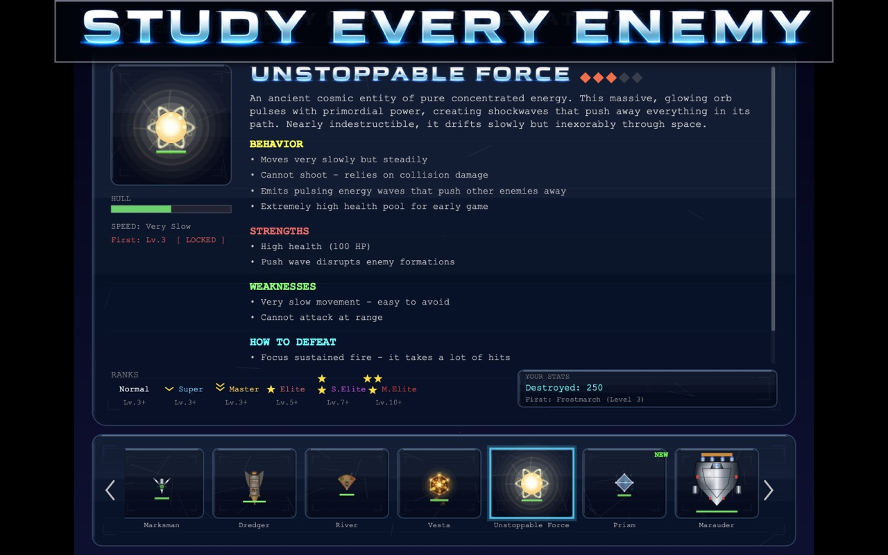

Relentless Space Combat
100 levels of relentless combat.
A modern space shooter for iPhone and Mac. Fast, tactical, and beautiful.








Studies how you play and comes back with a loadout built for your habits. Beat it once and it remembers.
Coordinates, flanks, adapts. Not a formation — a collective that hunts as one.
Alien capital ships that gate the level. All forward momentum halts and reinforcements stop until one goes down.
Seven gatekeepers. Each fights in phases — defensive, then aggressive, then desperate — and none of them let you through until your flying and your ship are both ready.
Eleven kinds. Tunnels, asteroid fields, blockades, wormholes, gravity wells, motherships, mirrors — each with its own rules.
Forty-three side rounds you earn, not buy — each one unlocked by an achievement. Swarm, Tunnel, Unstoppable, Boss, and Dodge, where your weapons are switched off entirely and staying alive is the only score.
Everything you destroy pays. Bonus coins drop for pilots willing to go and get them.
Weapon power, guns, side guns, fire rate, shields, health, drones, defence lasers. There is always another one to chase.
Eight tiers. The ship you finish in looks nothing like the one you started in.
Charges as you fight, waits until you call on it, then buys you the moment you needed.
A hundred and thirty-six — kill counts, score milestones, upgrade tokens. They're the keys to the Arcade, and forty-nine of them mirror to Game Center.
Every enemy catalogued with live demos and threat analysis — read it before you fly.
> Bonus rounds. Dynamic weather. A hand-tuned campaign. One more run.
I wanted a game I could disappear into for 20 minutes.
I love complex games, but sometimes I don't want to learn a huge world, remember where I was, or commit an entire evening. I wanted something I could pick up, play properly, and put down again.
There are plenty of simple games that work that way, but they often have a single mechanic or dimension. I wanted to take that simplicity of commitment and combine it with the depth of a real game.
So VYRON has 100 levels, increasingly difficult enemies, bosses, bonus rounds, rewards, upgrades, ship evolution and an enemy that actually learns how you fight.
You can play for twenty minutes and walk away. Or you can keep going.
I built VYRON because I wanted that game to exist.